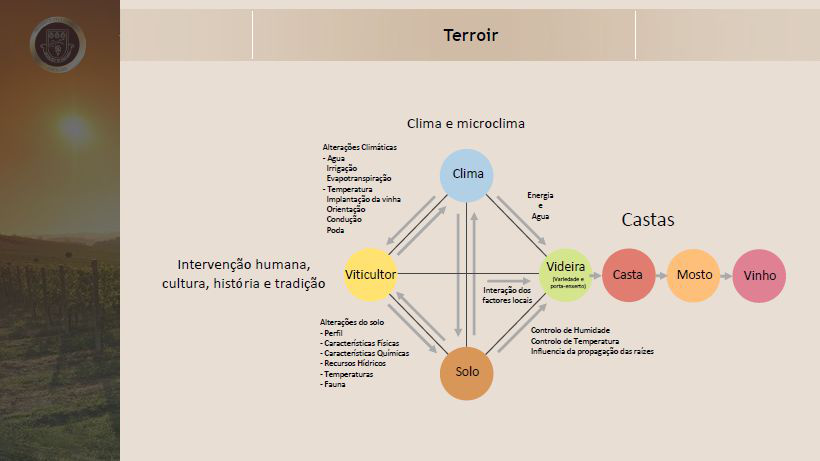
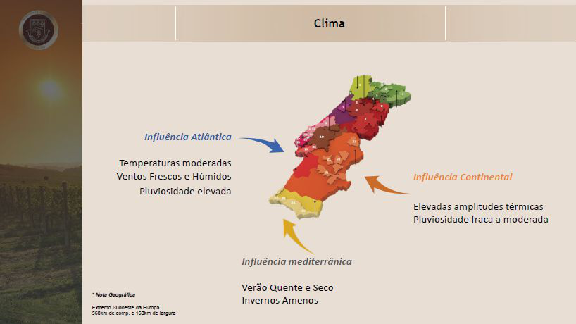
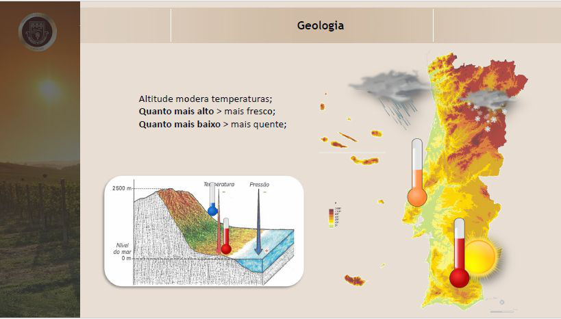

A qualidade e o estilo de um vinho são moldados, fundamentalmente, pelo conceito de terroir, um termo francês que designa o conjunto de fatores naturais e humanos que influenciam o perfil da uva e, por consequência, do vinho. Terroir não é apenas solo, mas uma interação complexa entre clima, microclima, relevo, tipo de solo, orientação das vinhas, práticas culturais e tradições humanas.

O clima é um dos elementos centrais do terroir. Ele determina o ritmo do ciclo vegetativo, a maturação das uvas e o equilíbrio entre acidez e açúcar. O microclima, por sua vez, refere-se às condições específicas de uma pequena área, podendo até ser delimitado por uma encosta, parcela ou vinha individual. Ainda mais localizado é o chamado micro-microclima, influenciado por barreiras vegetais, proximidade a corpos d'água, muros, entre outros.

O solo fornece à videira sustentação, água e nutrientes. Sua composição física e química afeta o desenvolvimento radicular, a absorção de nutrientes e a regulação hídrica. Entre os principais tipos de solo:
A temperatura do solo, sua fauna microbiana e os recursos hídricos influenciam diretamente o vigor e profundidade das raízes. O controle de humidade e temperatura do solo também é essencial para evitar doenças e manter a videira saudável.
A tradição cultural, as práticas de viticultura e a filosofia do produtor têm impacto profundo no vinho. Desde a escolha da casta até o método de vinificação, o fator humano fecha o ciclo do terroir.